一画
一（511） 乙（511）
二画
二（511） 十（512） 丁（512） 七（512） 八（512） 人（512） 入（513）
几（513） 九（513） 刀（513） 刁（513）
三画
三（513） 干（514） 于（514） 工（514） 士（514） 土（515） 丌（515）
下（515） 大（515） 丈（516） 万（516） 与（516） 才（516） 寸（516）
上（516） 口（516） □（517） 山（517） 千（517） 乞（517） 个（517）
义（517） 久（517） 凡（517） 丸（517） 及（517） 门（517） 之（517）
尸（517） 己（517） 卫（517） 也（517） 女（517） 小（518） 飞（518）
叉（518） 马（518） 子（519） 孑（519） 乡（519） 幺（519）
四画
丰（519） 王（519） 开（520） 井（520） 天（520） 夫（521） 元（521）
无（521） 云（521） 专（521） 艺（521） 木（521） 五（522） 支（522）
不（522） 犬（523） 太（523） 历（524） 车（524） 比（524） 戈（524）
区（524） 匹（524） 巨（524） 互（524） 切（524） 牙（524） 瓦（524）
卝（524） 止（524） 少（524） 日（524） 中（525） 贝（525） 内（525）
见（525） 牛（525） 手（526） 毛（526） 气（526） 升（526） 夭（526）
长（526） 仁（526） 什（526） 片（526） 仇（526） 仍（526） 仂（526）
爪（526） 化（526） 反（526） 刈（527） 父（527） 从（527） 今（527）
凶（527） 公（527） 分（527） 仓（527） 月（527） 勿（527） 丹（527）
风（527） 勼（527） 乌（527） 凤（528） 勾（528） 六（528） 文（528）
方（529） 火（529） 为（529） 计（529） 户（530） 心（530） 尺（530）
引（530） 巴（530） 以（530） 允（531） 劝（531） 双（531） 予（531）
毋（531） 孔（531） 书（531） 水（531）
五画
末（532） 未（532） 玉（532） 正（532） 功（532） 去（532） 甘（532）
世（532） 艾（532） 古（532） 节（533） 本（533） 术（533） 札（533）
可（533） 左（533） 石（533） 布（533） 龙（533） 灭（533） 平（533）
打（533） 扑（534） 东（534） 卡（534） 北（534） 占（534） 卢（534）
业（535） 旧（535） 归（535） 目（535） 且（535） 甲（535） 申（535）
电（535） 号（535） 叶（535） 田（535） 由（535） 叭（535） 史（535）
兄（535） 只（535） 四（536） 出（536） 生（536） 失（536） 付（536）
代（536） 仙（536） 仪（536） 白（536） 他（537）  （537） 斥（537）
（537） 斥（537）
卮（537） 瓜（537） 令（537） 用（537） 印（537） 匆（537） 匈（537）
犯（537） 外（537） 处（538） 刍（538） 包（538） 乐（538） 鸟（538）
饥（538） 主（538） 市（538） 立（538） 玄（538） 闪（538） 兰（538）
半（538） 头（538） 汉（538） 宁（539） 冯（539） 写（539） 讨（539）
让（539） 礼（539） 训（539） 必（539） 永（539） 司（539） 尼（540）
弗（540） 民（540） 出（540）
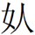
（540） 奴（540） 加（540） 发（540）边（540） 圣（540） 对（541） 台（541）
六画
式（541） 刑（541） 戎（541） 动（541） 圭（541） 吉（541） 老（541）
考（541） 地（541） 耳（542） 共（542） 芋（542） 亚（542） 芝（542）
朽（542） 朴（542） 机（542） 权（542） 再（542） 西（542） 朿（543）
在（543） 有（543） 百（543） 而（543） 存（543） 达（543） 灰（543）
列（543） 死（543） 迈（544） 成（544） 夷（544） 托（544） 尧（544）
毕（544） 扪（544） 臣（544） 至（544） 过（544） 此（544） 乩（544）
贞（544） 师（544） 光（545） 当（545） 吁（545） 虫（545） 曲（545）
吕（545） 同（545） 吊（545） 吃（545） 吸（545） 团（545） 岌（545）
回（545） 则（545） 肉（545） 年（545） 朱（545） 先（546） 竹（546）
伟（546） 传（546） 伍（546） 伏（546） 优（546） 伥（546） 伦（546）
华（546） 仿（546） 自（546） 伊（547） 仰（547） 伪（547） 血（547）
向（547） 似（547） 后（547） 行（547） 全（547） 会（547） 合（548）
杀（548） 企（548） 众（548） 创（548） 肌（548） 杂（548） 危（548）
负（548） 名（548） 多（548） 争（548） 色（548） 庄（548） 齐（548）
刘（549） 交（549） 衣（549） 妄（549） 闭（549） 问（549） 灯（549）
羊（549） 并（549） 关（549） 米（549） 汗（550） 江（550） 兴（550）
汲（550） 汝（550） 汤（550） 宇（550） 安（550） 冰（550） 军（550）
许（550） 讽（550） 农（550） 设（550） 那（550） 异（550） 导（550）
尽（550） 阮（550） 阳（550） 收（550） 阴（551） 如（551） 妇（551）
妃（551） 她（551） 好（551） 戏（551） 观（551） 欢（551） 买（551）
红（551） 纣（551） 纤（551） 纪（551） 孙（552） 约（552） 巡（552）
七画
寿（552） 麦（552） 玛（552） 形（552） 进（552） 远（552） 攻（552）
赤（552） 孝（552） 坟（552） 志（552） 声（552） 劫（552） 苇（552）
邯（552） 花（553） 芹（553） 芥（553） 芬（553） 苍（553） 严（553）
苎（553） 芦（553） 劳（553） 苏（553） 芧（554） 克（554） 杜（554）
巫（554） 极（554） 杞（554） 杨（554） 李（554） 更（555） 束（555）
吾（555） 豆（555） 两（555） 辰（555） 否（555） 还（555） 来（555）
扶（555） 轩（555） 抚（555） 抟（555） 连（555） 批（555） 抄（555）
医（555） 折（555） 扮（555） 投（555） 抗（556） 护（556） 把（556）
报（556） 拟（556） 求（556） 步（556） 卤（556） 坚（556） 县（556）
吴（556） 时（556） 里（557） 吠（557） 旷（557） 男（557） 足（557）
呐（557） 员（557） 听（557） 吹（557） 呜（557） 邑（557） 别（557）
岐（557） 帐（557） 删（557） 钊（557） 告（557） 乱（557） 利（557）
秀（557） 私（557） 吞（557） 我（557） 每（558） 兵（558） 何（558）
体（558） 佐（558） 作（558） 伯（559） 低（559） 你（559） 身（559）
佛（559） 伽（559） 近（559） 役（559） 返（559） 余（559） 希（559）
坐（559） 豸（559） 含（559） 邻（559） 彤（559） 角（559） 劬（559）
狂（559） 犹（559） 狄（559） 迎（559） 鸠（560） 饮（560） 言（560）
库（560） 应（560） 庇（560） 这（560） 弃（560） 忘（560） 怀（560）
闲（560） 炀（560） 状（560） 冷（560） 汪（560） 沙（560） 汽（560）
泛（560） 没（560） 汶（560） 沪（560） 沉（560） 沈（560） 完（561）
宋（561） 穷（561） 社（561） 启（561） 补（561） 识（561） 词（561）
良（561） 译（561） 君（561） 灵（561） 即（562） 屁（562） 局（562）
改（562） 张（562） 陆（562） 阿（562） 陈（562） 陀（564） 妓（564）
妙（564） 努（564） 邵（564） 鸡（564） 纬（564） 纯（564） 纳（564）
纵（564） 纸（564）
八画
奉（564） 环（564） 玩（565） 武（565） 青（565） 现（565） 责（565）
表（565） 规（565） 盂（565） 取（565） 耶（566） 坦（566） 坤（566）
坡（566） 其（566） 昔（566） 若（566） 茇（566） 茂（566） 英（566）
苟（566） 直（566） 范（566） 茄（566） 茅（566） 苺（566） 林（566）
枇（567） 松（567） 枪（567） 杭（567） 述（567） 枕（567） 或（567）
丧（567） 画（567） 剌（567） 事（568） 雨（568） 卖（568） 郁（568）
矽（568） 刳（568） 奔（568） 奇（568） 垄（568） 拔（568） 顶（568）
转（568） 斩（568） 轮（568） 软（568） 押（568） 拖（568） 拍（568）
拆（568） 拥（568） 拘（568） 势（568） 抱（568） 抵（568） 拉（568）
招（568） 抬（568） 卧（569） 欧（569） 到（569）  （569） 叔（569）
（569） 叔（569）
卓（569） 虎（569） 非（569） 贤（569） 尚（569） 昊（569） 果（569）
昆（569） 国（569） 明（570） 易（570） 迪（570） 典（570） 忠（570）
咏（570） 咈（570） 罗（570） 帖（571） 岣（571） 凯（571） 罔（571）
制（571） 知（571） 迭（571） 和（571） 竺（571） 牧（571） 物（571）
岳（571） 供（571） 侦（571） 使（571） 侏（571） 侨（571） 侂（571）
依（571） 侅（571） 帛（571） 卑（571） 的（571） 征（571） 质（571）
爬（571） 彼（572） 径（572） 所（572） 舍（572） 金（572） 命（572）
采（572） 受（572） 念（572）  （572） 肺（572） 朋（572） 服（572）
（572） 肺（572） 朋（572） 服（572）
昏（572） 周（572） 鱼（573） 狉（573） 兔（573） 狐（573） 忽（573）
狗（573） 饰（573） 饱（573） 变（573） 京（573） 享（573） 庙（573）
夜（573） 府（573） 底（573） 庖（573） 卒（573） 庚（573） 放（573）
於（573） 妾（573） 刻（573） 废（573） 盲（574） 性（574） 怪（574）
炎（574） 郑（574） 单（574） 净（574） 浅（574） 法（574） 河（574）
沮（574） 油（574） 泠（574） 泡（574） 学（574） 泥（575） 沼（575）
泼（575） 波（575） 泽（575） 治（575） 宝（575） 定（575） 空（575）
实（575） 官（575） 试（575） 诗（575） 诘（576） 诚（576） 诛（576）
诡（576） 询（576） 建（576） 肃（576） 隶（576） 居（576） 屈（576）
弥（576） 妲（576） 始（576） 弩（576） 孥（576） 承（576） 组（576）
细（576）  （576） 驷（576） 孟（576） 驸（576） 孤（576） 绊（576）
（576） 驷（576） 孟（576） 驸（576） 孤（576） 绊（576）
绋（576） 绍（576） 经（576）
九画
契（577） 春（577） 帮（577） 珂（577） 玻（577） 毒（577） 封（577）
城（577） 赵（577） 政（577） 某（577） 荆（577） 革（577） 荐（578）
荛（578） 带（578） 草（578） 荃（578） 茶（578） 茭（578） 垩（578）
荒（578） 药（578） 故（578） 胡（578） 南（579） 标（579） 枯（579）
柯（579） 相（579） 枳（579） 柏（579） 柳（579） 柿（579） 勃（579）
要（579） 咸（579） 威（580） 研（580） 砒（580） 面（580） 耐（580）
虿（580） 残（580） 殃（580） 挂（580） 挟（580） 拾（580） 指（580）
挑（580） 挦（580） 垫（580） 轻（580） 战（580） 点（580） 临（580）
省（580） 尝（580） 是（580） 显（580） 冒（580） 禺（580） 映（580）
星（580） 昨（580） 昭（580） 毗（580） 胃（580） 思（580） 贵（581）
虽（581） 品（581） 骂（581） 哈（581） 贻（581） 骨（581） 幽（581）
看（581） 钞（581）  （581） 钟（581） 钢（581）
（581） 钟（581） 钢（581）  （581） 钩（581）
（581） 钩（581）
拜（581） 选（582） 香（582） 种（582） 秋（582） 科（582） 重（582）
复（582） 段（582） 顺（582） 俏（582） 修（582） 保（582） 促（582）
俄（582） 俗（582） 信（582） 皇（582） 禹（583） 鬼（583） 衍（583）
须（583） 俞（583） 剑（583） 俎（583） 食（583） 胜（583） 胖（583）
脉（583） 狭（583） 独（583） 狮（583） 怨（583） 急（584） 哀（584）
庭（584） 疯（584） 施（584） 亲（584） 帝（584） 恒（584） 恺（584）
恨（584） 闻（584） 炸（584） 炮（584） 养（584） 美（585） 叛（585）
送（585） 类（585） 迷（585） 娄（585） 前（585） 首（585） 将（585）
总（585） 举（585） 洞（585） 洗（585） 活（585） 济（585） 洋（585）
浑（585） 觉（585） 宣（585） 室（585） 宫（585） 宪（586） 突（586）
穿（586） 客（586） 冠（586） 语（586） 祖（586） 神（586） 祝（586）
诰（586） 诱（586） 说（586） 既（586） 叚（586） 费（586） 眉（586）
除（586） 姨（586） 姚（586） 怼（586） 羿（586） 勇（586） 绑（586）
结（586） 给（586） 绛（587） 绝（587） 骈（587）
十画
耗（587） 秦（587） 泰（587） 班（587） 珰（587） 珠（587） 素（587）
顽（587） 载（587） 起（587） 盐（587） 袁（587） 都（587） 恐（588）
盍（588） 壶（588） 聂（588） 恭（588） 莱（588） 莲（588） 莫（588）
荷（588） 荼（588） 获（588） 莘（588） 晋（588） 恶（588） 真（588）
梆（588） 桂（588） 桓（588）
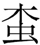
（588） 桐（588） 格（588） 桃（588）校（588） 根（588） 索（588） 速（588） 贾（589） 辱（589） 夏（589）
破（589） 原（589） 轼（589） 捞（589） 匿（589） 捏（589） 捉（589）
捐（589） 轿（589） 换（589） 挽（589） 热（589） 匪（589） 致（589）
柴（589） 虑（589） 监（589） 党（589） 逍（589） 晁（589） 晏（589）
蚍（589） 蚊（589） 蚬（589） 恩（589） 哭（589） 罢（589） 圆（589）
贼（589） 钱（590） 铁（590） 铃（590） 铅（590） 缺（590） 造（590）
笔（590） 笑（590） 积（590） 秩（590） 秘（590） 称（590） 特（590）
借（590） 倚（590） 倾（590） 倒（590） 俳（590） 倘（590） 俱（590）
倭（590） 臬（590） 臭（590） 皋（591） 射（591） 息（591） 倡（591）
候（591） 健（591） 徐（591） 拿（591） 脊（591） 爱（591）  （591）
（591）
狸（591） 胸（591） 脏（592） 脑（592） 逢（592） 饿（592） 恋（592）
高（592） 郭（592） 席（592） 效（592） 离（592） 唐（592） 站（593）
剖（593） 旁（593） 畜（593） 悖（593） 悟（593） 悔（593） 阃（593）
烧（593） 烟（593） 羞（593） 凌（593） 粉（593） 兼（593） 资（593）
酒（593） 浙（593） 消（593） 涅（593） 浩（593） 海（593） 浮（593）
流（593） 润（594） 浴（594） 浪（594） 害（594） 请（594） 诺（594）
读（594） 被（594） 冥（594） 谁（594） 调（594） 谈（594） 剥（594）
展（594） 剧（594） 弱（594） 陵（594） 蚩（594） 陶（594） 陪（595）
能（595） 通（595） 桑（595） 绣（595） 骏（595）
十一画
理（595） 域（595） 教（595） 培（595） 职（595） 基（595） 著（595）
勒（595） 黄（595） 萌（596） 菊（596） 营（596） 乾（596） 萧（596）
菰（596） 菑（596） 械（596） 梦（596） 梵（596） 梅（596） 梯（596）
梭（597） 啬（597） 曹（597） 副（597） 殒（597） 龚（597） 袭（597）
雪（597） 描（597） 掉（597） 辅（597） 排（597） 推（597） 捭（597）
掏（597） 掠（597） 接（597） 掷（597） 救（597） 虚（597） 堂（597）
常（597） 野（597） 晨（597） 眼（597） 眸（597） 悬（598） 曼（598）
唵（598） 啮（598） 唱（598） 唯（598） 啸（598） 崇（598） 婴（598）
 （598） 铜（598） 银（598） 笛（598） 笙（598） 第（598） 犁（598）
（598） 铜（598） 银（598） 笛（598） 笙（598） 第（598） 犁（598）
移（598） 偾（598） 做（598） 偃（598） 悠（598） 偈（598） 兜（598）
假（598） 盘（598） 斜（599） 盒（599） 敛（599） 彩（599） 翎（599）
象（599） 逸（599） 猫（599） 猗（599） 祭（599） 庶（599） 麻（599）
鹿（599） 康（599） 章（599） 商（600） 望（600） 率（600） 情（600）
悻（600） 悼（600） 惟（600） 惊（600） 阏（600） 粗（600） 断（600）
剪（600） 减（600） 兽（600） 敚（600） 敝（600） 盗（600） 清（600）
淌（600） 混（600） 涸（600） 淦（600） 淡（600） 深（601） 婆（601）
梁（601） 寅（601） 寄（601） 窒（601） 密（601） 谋（602） 谑（602）
祸（602） 谒（602） 谓（602） 隋（602） 堕（602） 随（602）
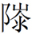
（602）隐（602） 娵（602）  （602） 绪（602） 绮（602） 骑（602） 绰（602）
（602） 绪（602） 绮（602） 骑（602） 绰（602）
绳（602） 维（602） 绵（602） 绿（602）
十二画
琴（602） 琼（602） 替（602） 越（602） 趋（603） 超（603） 喜（603）
博（603） 裁（603） 联（603） 斯（603） 期（603） 散（603） 募（603）
董（603） 敬（603） 蒋（603） 萱（603） 落（603） 惪（603） 韩（603）
朝（603） 辜（603） 葭（603） 棒（603） 森（603） 焚（603） 椒（603）
皙（603） 惠（603） 逼（603） 厨（603） 厦（603） 皕（604） 硬（604）
确（604） 雁（604） 厥（604） 揩（604） 暂（604） 提（604） 插（604）
搥（604） 雅（604） 髠（604） 紫（604） 悲（604） 凿（604） 最（604）
遇（604） 景（604） 嵌（604） 遗（604） 赋（604） 赐（604） 黑（604）
骫（604） 喀（604） 销（604） 铸（604） 锄（604） 短（605） 智（605）
犊（605） 等（605） 策（605） 嵇（605） 程（605） 傎（605） 傅（605）
蜑（605） 集（605） 储（605） 粤（605） 奥（605） 御（605） 循（605）
舒（605） 番（605） 释（605） 貂（605） 腊（605） 欿（605） 鲁（605）
猹（606） 猩（606） 猴（606） 颍（606） 蛮（606） 敦（606） 惰（606）
慨（606） 阔（606） 焰（606） 善（606） 羡（606） 普（606） 粪（607）
尊（607） 道（607） 遂（607） 曾（607） 湘（607） 湮（607） 温（607）
游（607） 割（607） 富（607） 谟（607） 遍（608） 裤（608） 裙（608）
谢（608） 谣（608） 谦（608） 属（608） 孱（608） 强（608） 巽（608）
隔（608） 媟（608） 登（608） 骗（608） 缇（608）
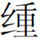
（608） 编（608）缘（608）
十三画
魂（608） 鼓（608） 跫（608） 塘（608） 蓝（608） 墓（608） 幕（608）
蓬（608） 蒲（608） 蒙（608） 傒（608） 楷（608） 楚（608） 禁（608）
槐（608） 榆（608） 榉（608）
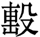
（609） 感（609） 碓（609） 碎（609）碰（609） 雷（609） 摄（609） 摸（609） 搢（609） 摅（609） 搬（609）
频（609） 虞（609） 睹（609） 睚（609） 嗜（609） 愚（609） 暖（609）
歇（609） 照（609） 跨（609） 遣（609） 蜗（609） 跪（609） 路（609）
跳（609） 鄙（609） 罪（609） 蜀（609） 嵩（609） 错（609） 锦（609）
雉（609） 筹（609） 签（609） 简（609） 稘（609） 稗（609） 愁（610）
魁（610） 微（610） 鉤（610） 貉（610） 遥（610） 腰（610） 腹（610）
觥（610） 触（610） 解（610） 猿（610）
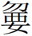
（610） 瘄（610） 新（610）意（611） 雍（611） 煔（611） 数（611） 慈（611） 满（611） 溥（611）
滒（611） 滥（611） 塞（611） 谨（611） 福（611） 裸（611） 谬（611）
群（611） 殿（611） 辟（611） 缝（611） 缠（611） 缢（611）
十四画
静（611） 碧（611） 赘（611） 嘉（611） 截（611） 赫（611） 聚（612）
斡（612） 蔡（612） 榛（612） 模（612） 槁（612） 榜（612） 歌（612）
碟（612） 愿（612） 舆（612） 誓（612） 裴（612） 夥（612） 踊（612）
踆（612） 蜡（612） 锲（612） 锻（612） 箑（612） 箪（612） 管（612）
僢（612） 僦（612） 僧（612） 鼻（612） 膜（612） 蜰（613） 雒（613）
敲（613） 塾（613） 旗（613） 辣（613） 韶（613） 端（613） 慢（613）
鲞（613） 精（613） 漆（613） 漫（613） 演（613） 漏（613） 赛（613）
寡（613） 察（613） 蜜（613） 嫩（613） 缧（613） 缩（613）
十五画
趣（613） 聪（613） 樊（613） 飘（613） 醇（613） 醉（613） 震（613）
撒（613） 撮（614） 撰（614） 暴（614）
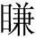
（614） 瞎（614） 影（614） （614） 踣（614） 踔（614） 蝼（614） 蝶（614） 蝴（614） 蝙（614）
（614） 踣（614） 踔（614） 蝼（614） 蝶（614） 蝴（614） 蝙（614）
颛（614） 墨（614） 镇（614）
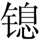
（614） 靠（614） 箱（614） 篆（614）稽（614） 稻（614） 黎（614） 儀（614） 德（614） 鹡（614）
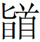
（615）鲧（615） 熟（615） 摩（615） 颜（615） 遵（615） 潭（615） 潘（615）
潠（615） 额（615） 翩（615） 鹤（615） 慰（615） 履（615）
十六画
磬（615） 燕（615） 薛（615） 颠（615） 翰（615） 整（615）
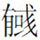
（615）霍（615） 操（615） 臻（615） 冀（615） 螓（615） 噫（615） 圜（615）
鹦（615） 黔（615） 骸（615）  （616） 赞（616） 篷（616） 穆（616）
（616） 赞（616） 篷（616） 穆（616）
儒（616） 雕（616） 磨（616） 瘰（616） 燔（616） 羲（616） 澡（616）
壁（616） 避（616）
十七画
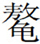
（616） 戴（616） 觳（616） 鞠（616） 藏（616） 檀（616） 磷（617）龌（617） 瞰（617） 嚎（617） 嚓（617） 髀（617） 魏（617） 篾（617）
黛（617） 爵（617） 襄（617） 膺（617） 貘（617） 孺（617）
十八画
瞽（617） 藤（617） 藩（617） 覆（617） 瞿（617） 颢（617） 曜（617）
 （617） 翻（617） 鹰（617） 襟（617）
（617） 翻（617） 鹰（617） 襟（617）
十九画
孽（617） 警（617） 攒（617） 蠉（617） 鼗（617） 爆（617） 瀛（617）
二十画
躄（617） 鼯（617）
二十一画
蠢（618） 趯（618） 霸（618） 露（618） 霹（618） 夔（618）
二十二画以上
囊（618） 鱻（618）
其他
5（618） C（618）  （618）（618）
（618）（618）